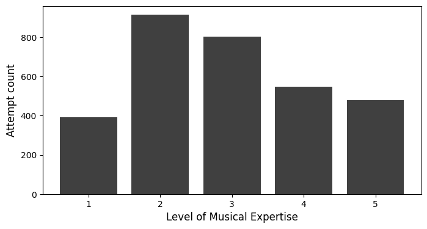
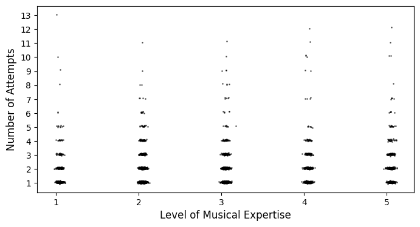
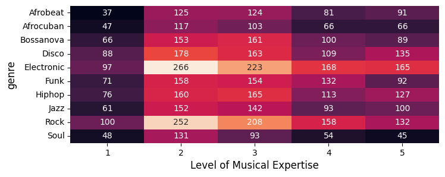

El Bongosero Dataset
A Crowd-Sourced Symbolic Dataset of Improvised Hand Percussion Rhythms Paired with Drum
This site is dedicated to the ANON Dataset, a crowd-sourced expressive symbolic dataset consisting of 6,035 improvised tapped sequences performed by 3,184 participants with varying levels of musical expertise.
Each sample contains expressive timing and dynamics information and is annotated with the participant’s self-reported level of musical expertise, the genre of the selected pattern, the chosen tempo, the total duration to complete the activity, and a user-rating for their performance and how much they enjoyed the exhibit.
Download Dataset & API Explore Dataset in Colab
Listen to the Collected Samples
To listen to or visualize the entire dataset, use the Inspect Data dropdown menu located at the corner of this page.
If you want to explore the entire dataset navigate to the following page:
Also, the following pages allow you to listen to subsets of the data if you are interested in a specific style:
- Subset 01: Bongo Improvisations along with Afrobeat Drum Patterns
- Subset 02: Bongo Improvisations along with Afrocuban Drum Patterns
- Subset 03: Bongo Improvisations along with Bossanova Drum Patterns
- Subset 04: Bongo Improvisations along with Disco Drum Patterns
- Subset 05: Bongo Improvisations along with Electronic Drum Patterns
- Subset 06: Bongo Improvisations along with Funk Drum Patterns
- Subset 07: Bongo Improvisations along with Hip-hop Drum Patterns
- Subset 08: Bongo Improvisations along with Jazz Drum Patterns
- Subset 09: Bongo Improvisations along with Rock Drum Patterns
- Subset 10: Bongo Improvisations along with Soul Drum Patterns
Dataset Statistics
Use the following notebook, to use and study the dataset
Number of total attempts by level of expertise:

Number of attempts per session by level of expertise:

Number of total attempts by genre and level of expertise:

Number of total attempts by genre:

Onset density and metrical weight per step of drum patterns and improvisations:

Number of unique patterns tested by genre and musical expertise:
